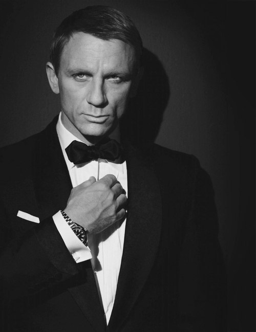

| Этап первый| | Этап второй| | Этап финальный| | Об авторе| |
Отнесись к первому свиданию максимально серьезно. Будет обидно, если сейчас, когда мышка уже внутри мышеловки, в устройстве что-то заборохлит. Иными словами, не тупи. Пусти в ход все свое обояние. На первом свидании важно продемонстрировать девушке свои намерения. Чуть замешкался - БУМ!И ты уже во фрэнд-зоне.
Будь настойчивым. Шути, предлагай руку (тактильный конакт очень важен), когда будешь усаживать ее за стол в ресторане. Улыбайся и слушай, что она будет говорить. Ее слова - твои зацепки для новых вопросов. Пусть говорит. А ты мотай на ус и вставляй шуточки. Потом расплатись, коротко попращайся и уйди.
Она:"Черт, кажется, я ему не понравилась".
Ты: "Я - чертов Джеймс Бонд".